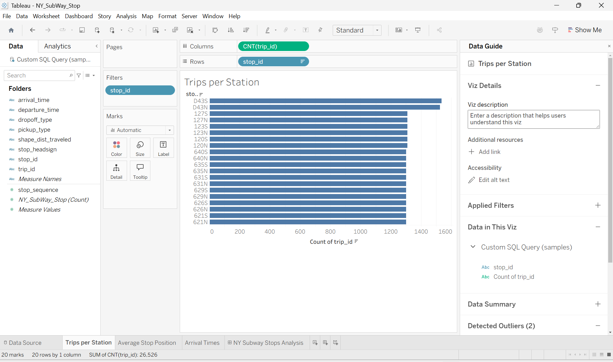
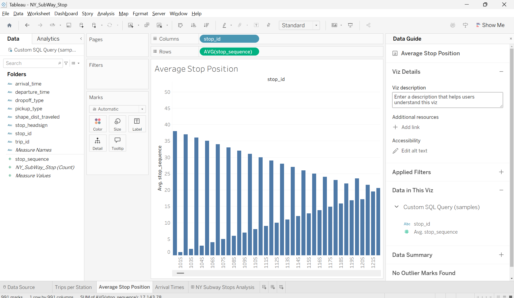
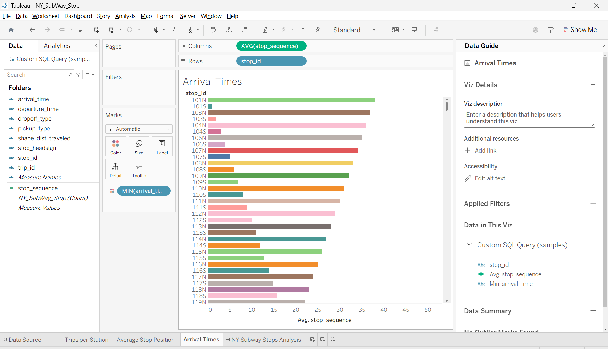
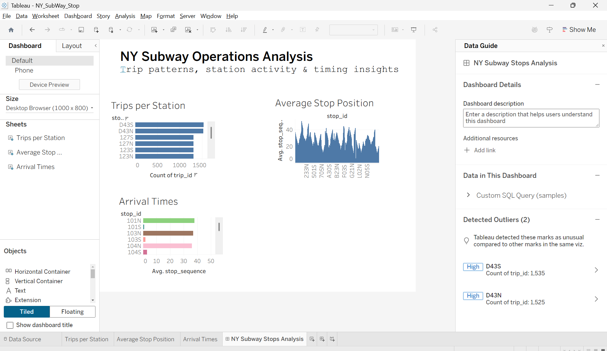

Interactive analysis of trip patterns, station activity, and arrival times using Tableau Desktop.
This sheet shows the number of trips per station, highlighting the busiest stations in the New York subway network.

This sheet visualizes the average stop position of each station, giving insights into early vs late stops across trips.

This sheet shows the distribution of train arrival times per station, highlighting peak hours and station-level timing patterns.

The complete dashboard combines all sheets, allowing interactive exploration of trip volumes, average stop positions, and arrival times.
